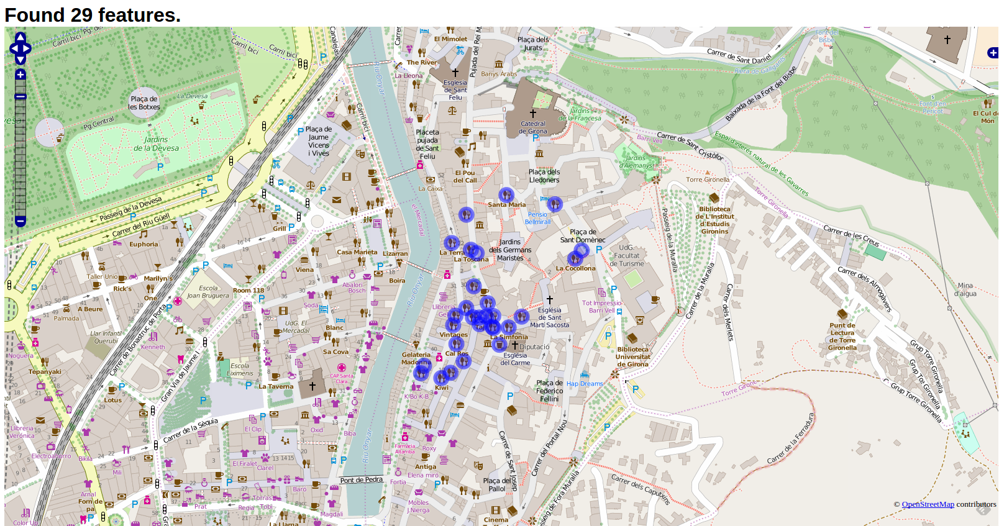

10. Javascript¶
Las librerías Openlayers y Leaflet tienen la posiblidad de trabajar con datos procedentes de OpenStreetMap, tanto en formato Raster como en formato vectorial.
10.1. OpenLayers¶
El wiki deOpenStreetMap ofrece ejemplos sencillos de consultas en OpenLayers. Puedes consultar la siguiente dirección:
http://wiki.openstreetmap.org/wiki/OpenLayers_Simple_Example
La documentación de OpenLayers 3 ofrece un buen ejemplo de consulta de datos vectoriales con OpenLayers 3. Se puede consultar en lasiguiente dirección:
http://openlayers.org/en/latest/examples/vector-osm.html
Para ejemplos más complejos una buena forma de aprender es realizar la correspondiente consulta Overpass API en la página http://overpass-api.de/query_form.html y pedirle que nos dé la salida en OpenLayers. Sobre dicha salida podemos examinar el código fuente para comprender los conceptos y librerías utilizadas. Un ejemplo podría ser:
{kind=link}
10.2. Leaflet¶
La siguiente página de Mapbox ofrece un ejemplo para descargar datos vectoriales de OpenStreetMap:
https://www.mapbox.com/mapbox.js/example/v1.0.0/leaflet-osm/